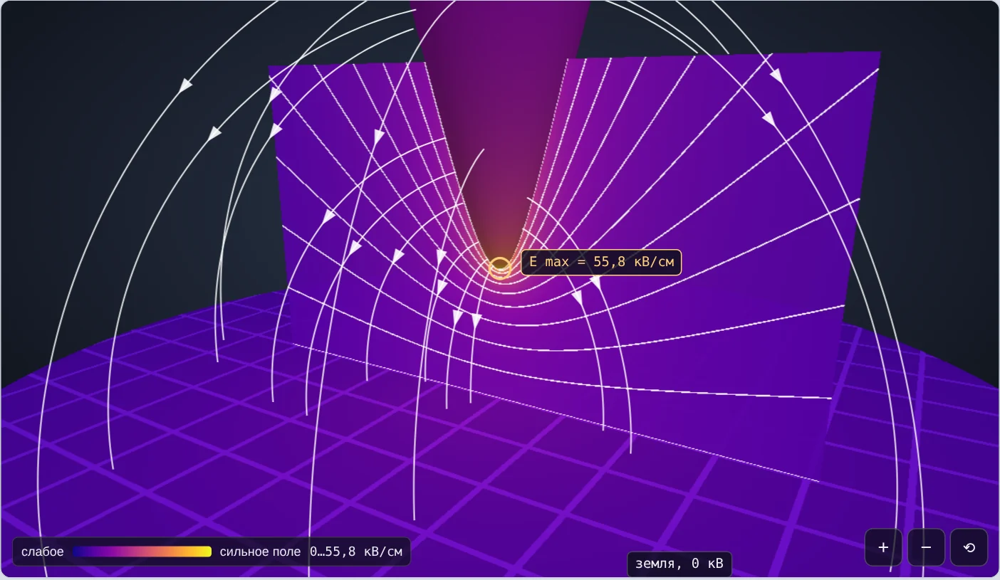
Техника высоких напряжений · Лекция 1
Напряжённость поля, степень неоднородности и от чего она зависит
Лекция · опыты на 3D-модели «Электроды 3D» · практическое занятие · тест
Введение
01
Напряжённость и потенциал
02
Однородное и неоднородное поле
03
Радиус кривизны
04
Типовые системы электродов
05
Заземление и полярность
06
Как снизить неоднородность
07
Опыты на 3D-модели
→
Затем: 10 задач и тест
Лекция 1 · Электрическое поле в изоляционных промежутках
2
Главная мысль лекции
Одно и то же напряжение безопасно у гладкого шара и опасно у острой кромки. Поэтому главная задача расчёта — найти Emax и место, где она возникает.
Основные понятия
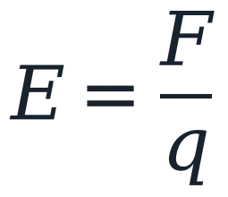
Сила, действующая на единичный заряд. Единицы: В/м, в ТВН — кВ/см. 1 кВ/см = 100 кВ/м.
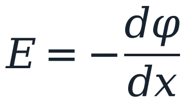
E направлена в сторону убывания потенциала φ. Напряжение U = φ1 − φ2.
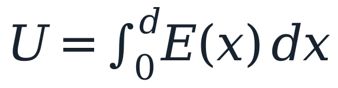
Площадь под графиком E(x) вдоль оси промежутка равна U. Где E больше — в другом месте она меньше.
Лекция 1 · Электрическое поле в изоляционных промежутках
4
Основные понятия
Силовая линия — касательная к ней совпадает с направлением E. Выходит из «+», входит в «−» или в землю.
Эквипотенциаль — линия равного потенциала. Силовые линии всегда перпендикулярны эквипотенциалям.
Гуще линии, ближе эквипотенциали — сильнее поле. Поверхность металла — эквипотенциаль: E перпендикулярна ей, внутри металла E = 0.
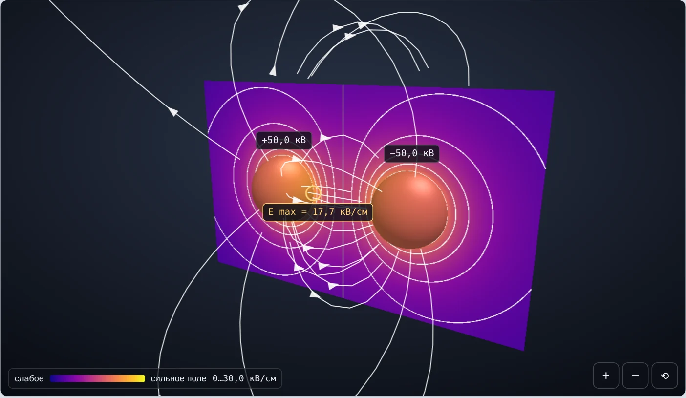
Лекция 1 · Электрическое поле в изоляционных промежутках
5
Однородное поле
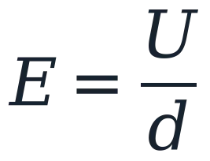
E одинакова во всём промежутке: Emax = Eср, kн = 1.
U = 50 кВ, d = 2 см → E = 25 кВ/см. При U = 60 кВ E = 30 кВ/см — воздух пробивается.
Края электродов скругляют (профиль Роговского), чтобы поле на краях не усиливалось.
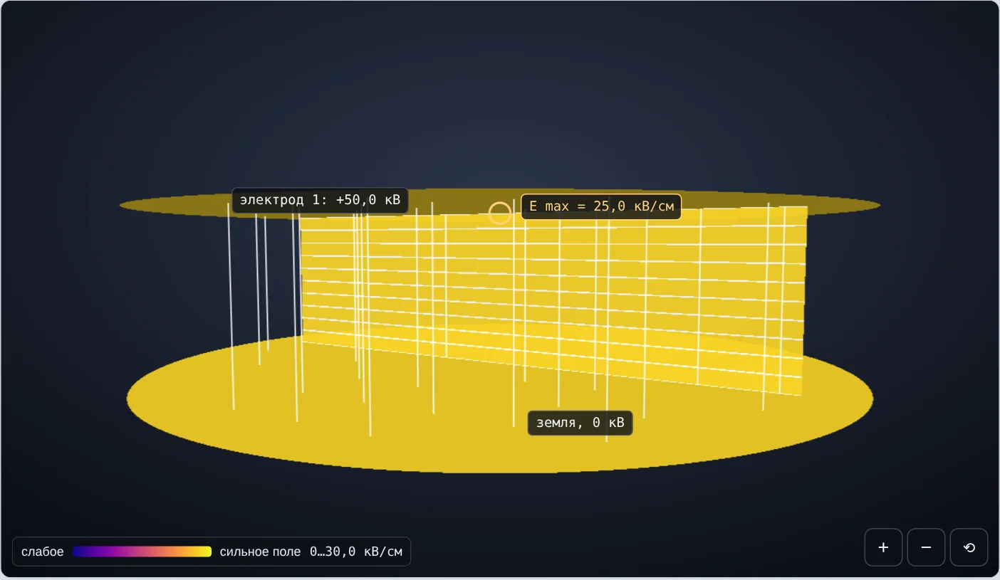
Лекция 1 · Электрическое поле в изоляционных промежутках
6
Неоднородное поле
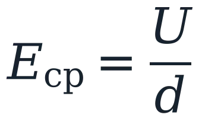
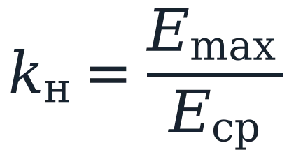
Eср — какой была бы E, если бы поле было однородным.
Emax — у электрода с наименьшим радиусом кривизны.
kн зависит только от геометрии: при росте U вдвое Emax и Eср растут вдвое.
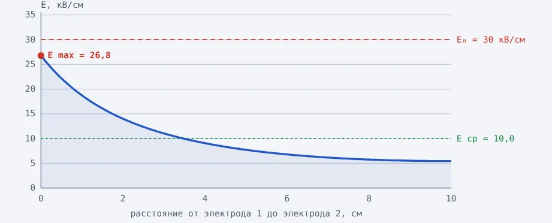
Шар — плоскость: r = 5 см, d = 10 см, U = 100 кВ. Eср = 10 кВ/см, у шара Emax = 26,8 кВ/см, у плоскости 5,4 кВ/см. kн = 2,68.
Лекция 1 · Электрическое поле в изоляционных промежутках
7
Неоднородное поле
| Поле | kн | Пример | Как развивается разряд |
|---|---|---|---|
| Однородное | 1 | Плоскость — плоскость | Пробой сразу |
| Слабонеоднородное | < 2 | Шары при d < r, кабель | Пробой почти сразу |
| Неоднородное | 2…4 | Шар — плоскость, d ≈ 2r | Промежуточный случай |
| Резконеоднородное | > 4 | Острие, провод над землёй | Сначала корона, потом пробой |
Границы условны и в учебниках немного различаются. Корона и пробой газов — темы следующих лекций.
Лекция 1 · Электрическое поле в изоляционных промежутках
8
Радиус кривизны
Радиус кривизны — радиус окружности, прилегающей к поверхности: у плоскости бесконечен, у шара равен r, у острия — доли миллиметра.
Уединённый шар под потенциалом U:
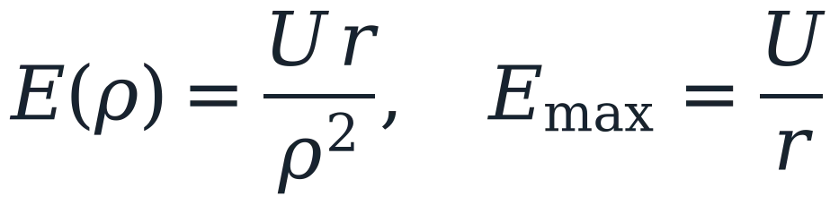
С заземлённым концентрическим шаром R = r + d:
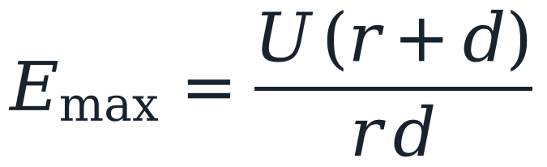
×100
Шар радиусом 1 мм имеет у поверхности поле в 100 раз сильнее, чем шар 10 см при том же потенциале.
Поэтому заусенцы, острые кромки и тонкие провода — источники короны и частичных разрядов.
Лекция 1 · Электрическое поле в изоляционных промежутках
9
Опыт 2 на модели
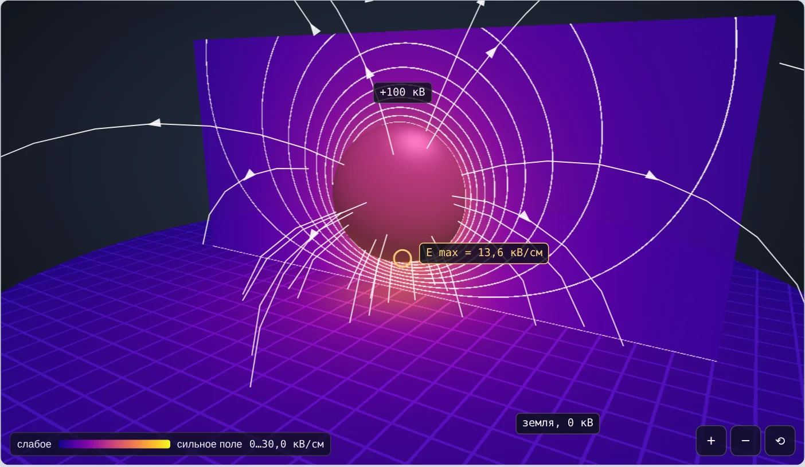
r = 20 см: Emax = 13,6 кВ/см, kн = 1,36
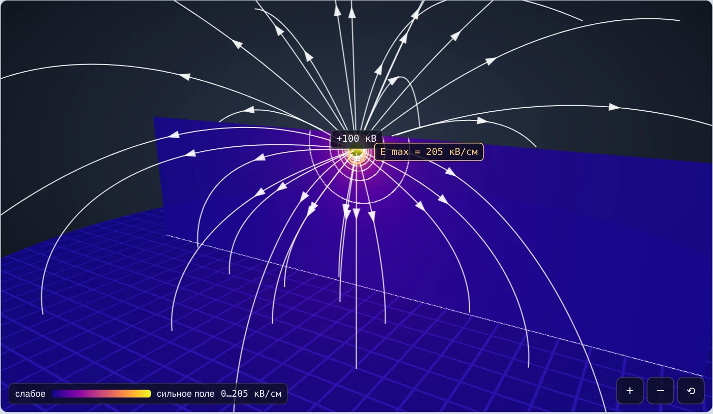
r = 0,5 см: Emax = 205 кВ/см, kн = 20,5
U = 100 кВ, d = 10 см: Eср = 10 кВ/см в обоих случаях, а Emax отличается в 15 раз.
Лекция 1 · Электрическое поле в изоляционных промежутках
10
Типовые системы · 1
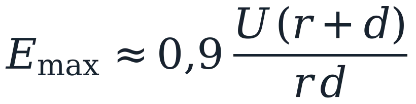
Поправка 0,9 к формуле сферического конденсатора.
Точное решение — метод зеркальных изображений: плоскость заменяют зеркальным шаром с потенциалом −U.
r = 5 см, d = 10 см, U = 100 кВ → 27,0 кВ/см (точно 26,8).
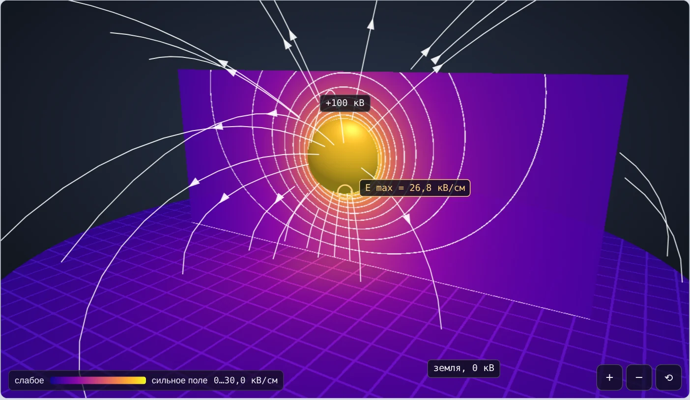
Лекция 1 · Электрическое поле в изоляционных промежутках
11
Типовые системы · 2
При симметричном питании ±U/2 плоскость между шарами имеет потенциал 0 и работает как заземлённая плоскость.
Каждая половина — шар — плоскость с напряжением U/2 и расстоянием d/2:
Шаровыми разрядниками измеряют высокое напряжение в лабораториях. Таблицы пробивных напряжений (IEC 60052) составлены для схемы с одним заземлённым шаром.
Если заземлить один шар, поле становится несимметричным — разберём на слайде про заземление.
Лекция 1 · Электрическое поле в изоляционных промежутках
12
Типовые системы · 3
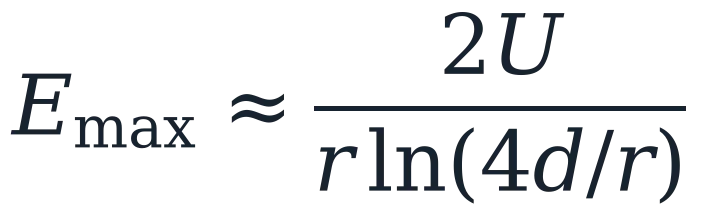
Формула Коэльо — Дебо (r ≪ d). Точное решение — острие в виде гиперболоида вращения.
r = 0,5 см, d = 10 см, U = 60 кВ: Eср = 6 кВ/см, а Emax = 55,8 кВ/см, kн ≈ 9,3.
Поле резко падает уже в нескольких r от вершины.
Лекция 1 · Электрическое поле в изоляционных промежутках
13
Типовые системы · 4
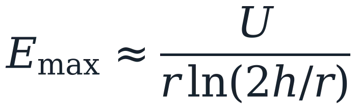
h = r + d — высота оси провода. Провод r = 1,2 см на высоте 10 м:
| Линия | U фазн. | Emax |
|---|---|---|
| 220 кВ | 180 кВ | 20,2 кВ/см — норма |
| 500 кВ | 408 кВ | 45,9 кВ/см — корона |
Поэтому на линиях 330 кВ и выше фазу расщепляют на несколько проводов.
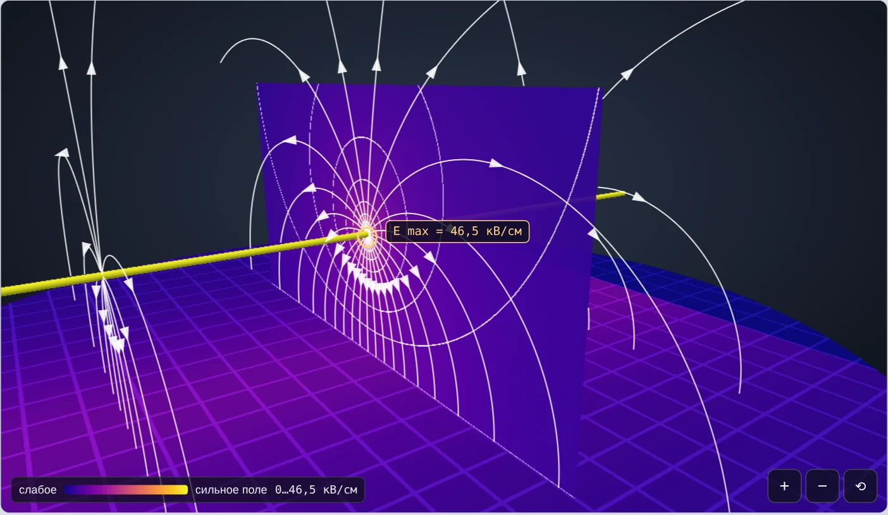
Лекция 1 · Электрическое поле в изоляционных промежутках
14
Типовые системы · 5
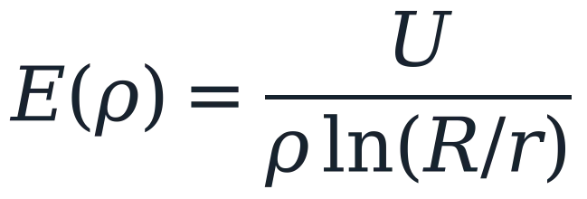
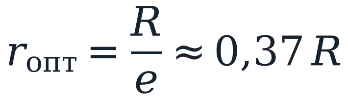
Emax — у жилы, у экрана поле в R/r раз слабее.
Тонкая жила — малый радиус кривизны; толстая — тонкий слой изоляции. Между ними оптимум r = R/e.
r = 1,5 см, d = 3 см, U = 100 кВ: 60,7 кВ/см у жилы, 20,2 у экрана.
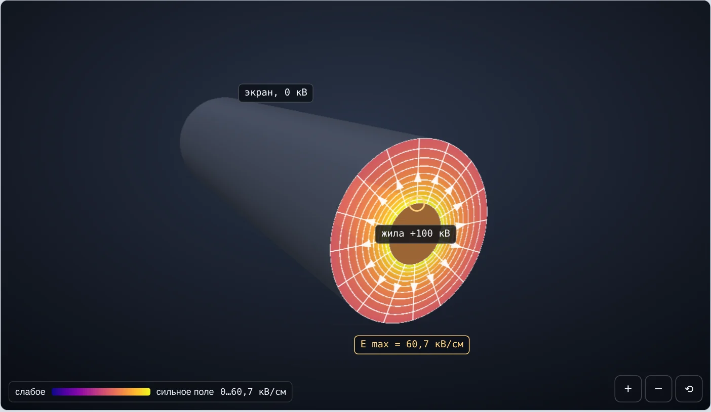
Лекция 1 · Электрическое поле в изоляционных промежутках
15
Типовые системы · сводка
| Система | Emax | kн |
|---|---|---|
| Плоскость — плоскость | U/d | 1 |
| Шар — плоскость | 0,9·U·(r + d)/(r·d) | 0,9·(r + d)/r |
| Шар — шар, ±U/2 | 0,9·(U/2)·(r + d/2)/(r·d/2) | 0,9·(r + d/2)/r |
| Острие — плоскость | 2U/(r·ln(4d/r)) | 2d/(r·ln(4d/r)) |
| Провод, h = r + d | U/(r·ln(2h/r)) | d/(r·ln(2h/r)) |
| Кабель, R = r + d | U/(r·ln(R/r)) | d/(r·ln(R/r)) |
U — напряжение (амплитуда), d — промежуток, r — радиус кривизны острого электрода. Во всех формулах kн не зависит от U.
Лекция 1 · Электрическое поле в изоляционных промежутках
16
Заземление
Два шара r = 5 см, d = 10 см, между ними 100 кВ. E у поверхности, кВ/см:
| Схема | Шар 1 | Шар 2 |
|---|---|---|
| Питание ±U/2 | 17,7 | 17,7 |
| Шар 2 заземлён | 23,4 | 12,0 |
| Шар 2 не подключён | 20,4 | 6,1 |
Заземлённый шар «делит» силовые линии с окружающей землёй: у шара под напряжением E растёт на 32 %.
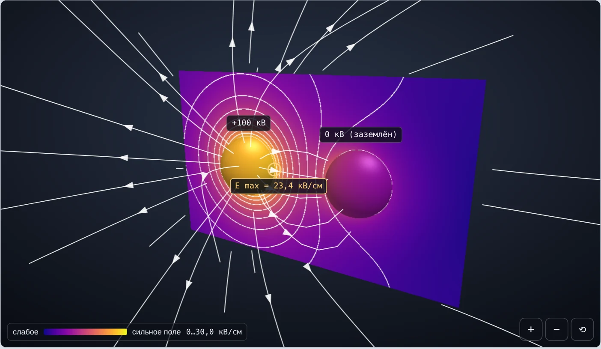
Лекция 1 · Электрическое поле в изоляционных промежутках
17
Техника безопасности
+25 кВ
столько принимает ни к чему не подключённый шар рядом с электродом 100 кВ.
Его заряд равен нулю, но поле разделяет на нём заряды. Всё металлическое в зоне высокого напряжения заземляют.
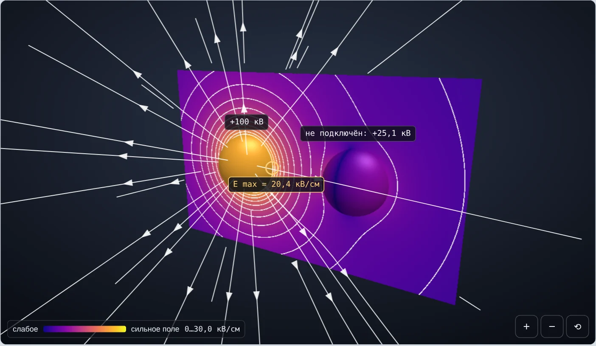
Лекция 1 · Электрическое поле в изоляционных промежутках
18
Полярность
Те же эквипотенциали и та же Emax. Меняется только направление силовых линий: стрелки разворачиваются.
В резконеоднородном поле процессы у острия «+» и «−» различаются: это полярный эффект. Разберём в лекциях о разряде в газах.
Лекция 1 · Электрическое поле в изоляционных промежутках
19
Проектирование
Скругление кромок, зачистка заусенцев, шаровые наконечники выводов.
Экранные кольца на гирляндах и арматуре, тороиды на испытательных установках.
Пучок проводов на ЛЭП 330 кВ и выше работает как провод большого радиуса.
Радиус жилы r ≈ R/e, разумный выбор расстояний.
Электроды Роговского дают однородное поле в испытательной ячейке.
Никаких плавающих металлических частей в зоне высокого напряжения.
Лекция 1 · Электрическое поле в изоляционных промежутках
20
Первая проверка любой конструкции
Если у поверхности электрода Emax достигла E₀, воздух там начинает ионизироваться: свечение, треск, корона.
E₀ ≈ 30 кВ/см — прочность воздуха в однородном поле при нормальных условиях (20 °C, 101,3 кПа), амплитуда. Точное значение зависит от радиуса, давления и температуры — уточним в теме «Корона».
Цифровая лаборатория
Вкладка 1
6 систем электродов, U, r, d, подключение, полярность. Расчёт по шагам и график E вдоль оси.
Вкладка 2
10 задач из практики: ввод и проверка ответа, подсказка, решение, открытие в лаборатории.
Вкладка 3
5 вариантов по 10 вопросов, оценка и разбор ошибок.
Слои сцены: цветной разрез, эквипотенциали, силовые линии, свечение, цвет поверхности. Щелчок по разрезу — зонд показывает E и φ в точке.
Лекция 1 · Электрическое поле в изоляционных промежутках
22
Демонстрация
Меняем U и d.
E = U/d, kн = 1; при 60 кВ на 2 см E = E₀.
Шар: r от 20 до 0,5 см.
Emax 13,6 → 205 кВ/см, Eср не меняется.
Включаем «Свечение».
Поле у вершины, kн ≈ 9, Emax > E₀.
Схема второго шара.
17,7 / 23,4 / 20,4 кВ/см; плавающий шар ≈ 25 кВ.
Меняем r при R = const.
Минимум Emax при r ≈ R/e.
«+» / «−».
Меняются только стрелки силовых линий.
Результаты студенты записывают в таблицу чек-листа (раздел 3).
Лекция 1 · Электрическое поле в изоляционных промежутках
23
Практическое занятие 1
01 Испытательная ячейка с плоскими электродами
06 Поле в изоляции кабеля 10 кВ
02 Заусенец на шине распредустройства
07 Шаровой разрядник: один шар заземлён
03 Шаровой наконечник вывода
08 Подбор радиуса экрана
04 Экранное кольцо вместо головки болта
09 Незаземлённая деталь рядом с высоким напряжением
05 Почему провода ЛЭП 500 кВ расщепляют
10 Сравнение неоднородности полей
Ответ принимается с точностью 3 %. Каждую задачу можно открыть в 3D-модели.
Оценка: 9–10 задач — «отлично», 7–8 — «хорошо», 5–6 — «удовлетворительно».
Лекция 1 · Электрическое поле в изоляционных промежутках
24
Разбор задачи 2
После резки на кромке шины остался заусенец; в ячейке треск, датчик фиксирует частичные разряды.
Дано: острие r = 0,05 см, после зачистки r = 0,5 см; d = 5 см; U = 20 кВ.
2·20/(0,05·ln 400) = 133,5
2·20/(0,5·ln 40) = 21,7
Заусенец
133,5 кВ/см
в 4,5 раза выше E₀ — разряды
После скругления
21,7 кВ/см
ниже E₀ — разрядов нет
Лекция 1 · Электрическое поле в изоляционных промежутках
25
Чек-лист студента
Лекция 1 · Электрическое поле в изоляционных промежутках
26
Самопроверка
1. Почему пробой начинается там, где E максимальна, а не там, где она средняя?
5. При каком радиусе жилы поле в кабеле минимально и почему есть оптимум?
2. Что означает площадь под графиком E(x) вдоль оси?
6. Как изменится поле двух шаров, если один из них заземлить?
3. Почему kн не зависит от напряжения?
7. Почему опасна незаземлённая деталь рядом с электродом?
4. Почему у острия поле сильнее, чем у шара, при тех же U и d?
8. Назовите три способа уменьшить Emax.
Лекция 1 · Электрическое поле в изоляционных промежутках
27
Итоги
1 Прочность изоляции определяет Emax, а не средняя U/d.
2 kн = Emax/Eср зависит только от геометрии электродов.
3 Меньше радиус кривизны — сильнее поле у поверхности.
4 Схема подключения меняет поле; незаземлённые детали приобретают опасный потенциал.
5 Если Emax ≥ E₀ ≈ 30 кВ/см — ионизация. Снижаем радиусами, экранами, расщеплением, размерами.
Лекция 1 · Электрическое поле в изоляционных промежутках
28